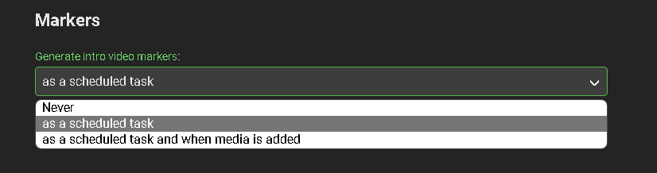
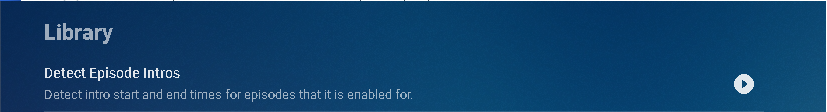
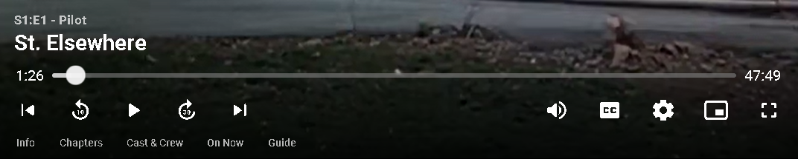
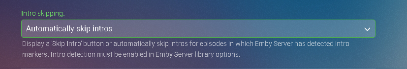

Intro-Überspringen
Erfordert Emby Server 4.7 oder höher und ein Emby Premiere Abonnement.
Konfigurieren einer TV-Bibliothek im Emby Server
Um Intro-Überspringen nutzen zu können, muss eine TV-Show-Bibliothek konfiguriert werden. Bearbeiten Sie eine TV-Bibliothek auf der Emby Server-Konsole. Scrollen Sie nach unten zum Abschnitt Marker in der Bibliothek und ändern Sie die Option von Nie entweder auf "als geplante Aufgabe" oder "als geplante Aufgabe und beim Hinzufügen von Medien", je nach Ihren speziellen Anforderungen.

Sobald konfiguriert, gehen Sie optional zum Menü Geplante Aufgaben, und Sie sehen eine neue Aufgabe "Erkennen von Episoden-Intros", die im Bibliotheksbereich hinzugefügt wurde.

Standardmäßig ist diese Aufgabe so eingestellt, dass sie alle 24 Stunden ausgeführt wird.

Sie können diese Aufgabe optional anpassen, um sie zu einer bestimmten Zeit auszuführen. Um eine neue Aufgabe hinzuzufügen, klicken Sie auf das Pluszeichen oben.
Dies zeigt einen neuen Zeitplan, der um 3 Uhr morgens beginnt und bis zu 4 Stunden läuft.

Wir können jetzt das Papierkorbsymbol anklicken, um den 24-Stunden-Zeitplan zu entfernen:

Erkennung von Episoden-Intros manuell ausführen
Die Erkennung von Episoden-Intros kann jederzeit manuell ausgeführt werden, indem Sie die Pfeiltaste drücken. Die Aufgabe wird zu einem Fortschrittsbalken wie diesem:

Es ist nichts Weiteres auf dem Emby Server zu tun.
Note
Der Server wird alle TV-Show-Episoden im Hintergrund verarbeiten. Dieser Vorgang kann eine Weile dauern, abhängig von der Anzahl der Episoden, die Sie haben.
Emby-Client für automatisches oder manuelles Intro-Überspringen konfigurieren
Jeder Client kann so eingestellt werden, dass er TV-Show-Intros ignoriert, Intros automatisch verwendet oder eine Schaltfläche zum Überspringen anzeigt. Diese Option kann im Wiedergabemenü der Client-Optionen festgelegt werden.

Verwendung von Intro-Überspringen
Mit der ausgewählten Schaltfläche Intro-Überspringen können Sie die Schaltfläche im OSD sofort zu Beginn der Wiedergabe deutlich sehen. Die Zeitleiste steht noch auf 0:00, bevor die Show zu spielen beginnt, und wir können bereits das Intro der Show überspringen.

Durch Klicken auf die Schaltfläche Intro-Überspringen springt man sofort direkt zum Anfang der Episode.

Mit der Client-Option zum automatischen Überspringen von Intros wurden unsere TV-Show-Intros auf Autopilot gesetzt.

Gleich zu Beginn der Wiedergabe springt es zum Ende des Intros, genau zum Punkt des Einblendens.

Intro-Überspringen auf Emby für LG Smart TVs
Neu in LG 1.0.37 ist die Fähigkeit, Segmenten von TV-Show-Episoden-Intros zu überspringen. Dies ermöglicht es Ihnen, direkt zum Start der Handlung zu springen und spart viel Zeit, sodass Sie schnell zu den spannenden Szenen kommen! Kombinieren Sie Intro-Überspringen mit Automatisches Abspielen der nächsten Episode für ein hervorragendes Binge-Watching-Erlebnis!